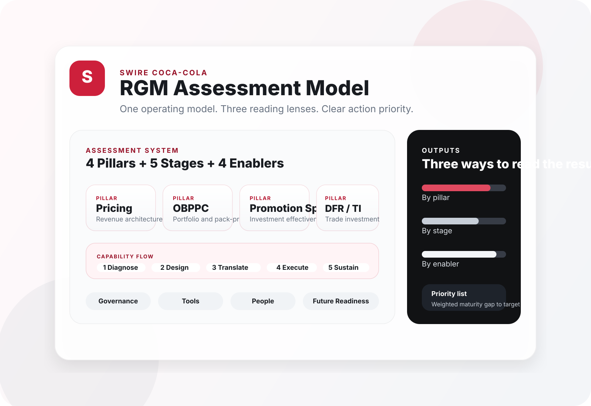

Core business levers
Enterprise Revenue Growth Management
See the assessment model in a single glance.
This portal explains the Swire RGM assessment, shows how the scoring logic works, and turns the workbook into a cleaner digital experience for respondents and reviewers.
Shared capability flow
Core maturity questions
Sustainability conditions

Why It Matters
Less like a survey. More like a management instrument.
Show where value creation is blocked
Separate business performance symptoms from capability maturity causes.
Make the model understandable
Turn a large workbook into a clearer architecture, flow, and scoring story.
Move directly into action
Translate answers into gap-to-target logic and a ranked priority list.
Three Short Paths
Use the site the same way a leadership team would.
Understand the framework
See the 4 pillars, 5 stages, 4 enablers, and operating cycle.
Open FrameworkUnderstand the logic
See how answers become scores, scores become gaps, and gaps become priorities.
Open LogicRun the assessment
Enter a market session, score the maturity anchors, and review live results.
Open AssessmentHow It Works
One short operating chain from answer to priority.
Score each question against maturity anchors.
Aggregate by pillar, stage, and enabler.
Read actual maturity against target state.
Rank weighted gaps for follow-through.
Model Snapshot
The architecture is easier to understand when it reads like a product diagram.
The site now uses one branded system view instead of relying only on text blocks and cards.
Ready To Use
Start with the assessment, then use the other pages as decision support.
The site is intentionally short at the top level. Framework and logic are separated, and the full working experience lives in the assessment page.